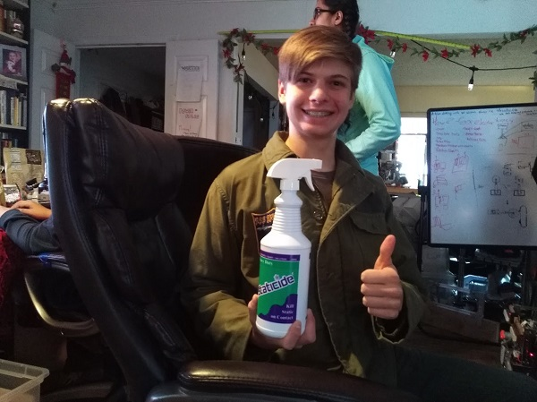

On Dec. 18, we came to QD Academy to test our robot under tournament conditions. At Arkansas, we had frequent static issues on the mats provided, and we had trouble recreating the static in practice to prevent it, so we wanted to try to find a cure for it. As well, we've been improving our autonomous code, so we were excited to try that.
We did well at the scrimmage, compared to the teams that we went against (4-1). We were lucky to already have been to a tournament - and a regional at that, so we ended up placing 3rd, and our sister team placed 5th. However, we still ran into new, and worse, issues. First, the static issue reemerged, and became worse than when we were at the Arkansas tournament. As well, when we bumped into the beacons with enough speed, our robot would turn off, and we would have to completely reboot the robot at the end of the match.
To solve the static issue we had bought Staticide(TM), but we forgot to bring it, so we have no idea if it works for our robot or not. We tried rubbing down our robot with dryer sheets, but it just exacerbated the issue if it did anything at all. The beacon issue seemed also to be caused by the static discharge, but we haven't determined it conclusively yet.
We scored a lot of points, but we need to optimize our autonomous for both sides to score even more. As well, we still need to solve the persistent static problem, as it will really harm us in January if it continues.